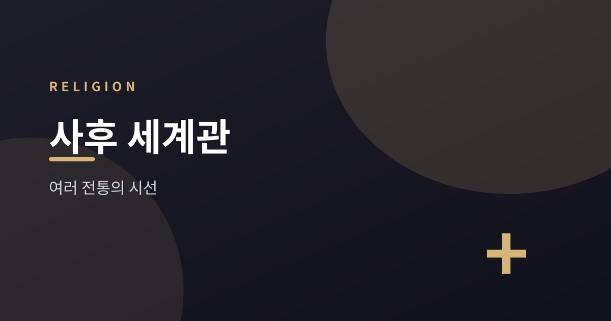
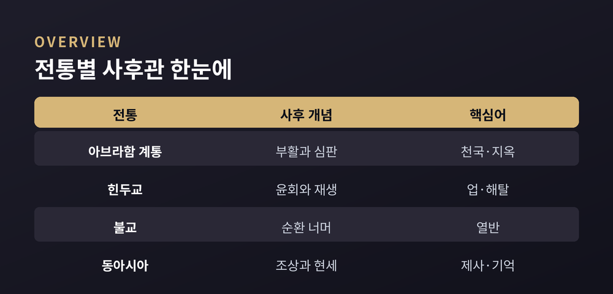
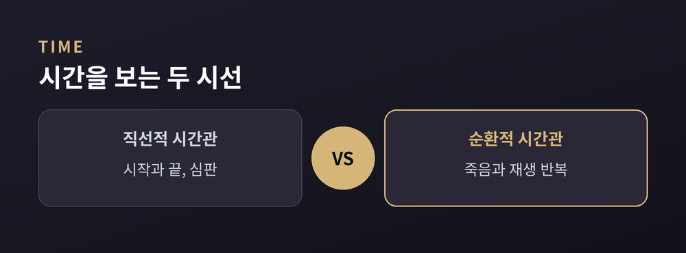
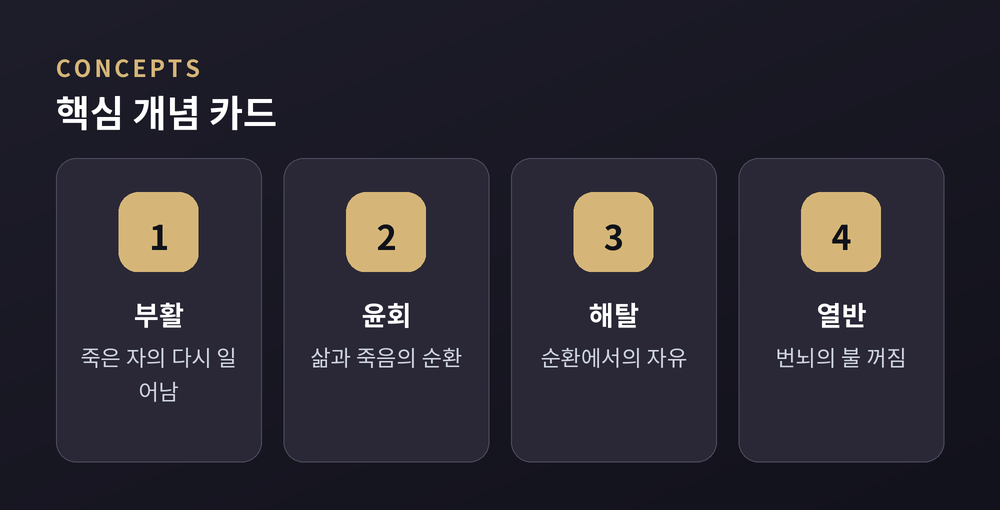
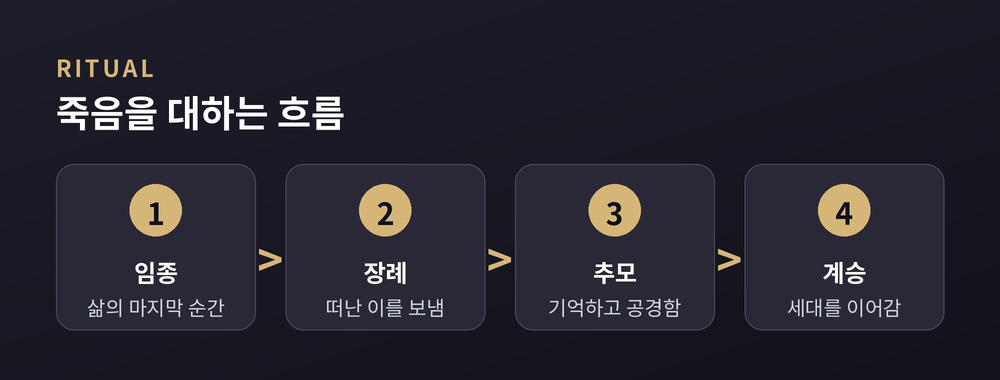

죽음 이후를 상상하는 여러 전통

죽음은 모든 인간이 마주하는 보편적 사건이지만, 죽음 이후를 상상하는 방식은 문화와 전통에 따라 크게 갈라집니다. 어떤 전통은 육체의 부활과 최후의 심판을 이야기하고, 어떤 전통은 영혼이 몸을 바꾸며 다시 태어나는 순환을 이야기합니다. 또 어떤 전통은 사후의 개별 운명보다 현세의 삶과 조상과의 관계를 더 중요하게 여깁니다.
이 글은 세계 주요 종교 전통이 죽음 이후를 어떻게 그려 왔는지를 중립적이고 설명적으로 정리합니다. 어느 관점이 옳고 그른지를 판별하려는 것이 아니라, 각 전통이 오랜 역사 속에서 발전시켜 온 개념과 상징의 지형도를 함께 살펴보려는 것입니다. 사후 세계관은 단순한 상상이 아니라 그 전통이 인간과 세계, 시간과 도덕을 어떻게 이해하는지를 압축해서 보여 주는 창이기 때문입니다.
같은 물음 앞에서 인류가 얼마나 다양한 답을 마련해 왔는지를 살펴보는 일은, 낯선 전통을 존중하며 이해하는 첫걸음이기도 합니다. 이제 아브라함 계통에서 시작해 인도 계통, 동아시아의 관점까지 차례로 짚어 보겠습니다.
유대교, 기독교, 이슬람으로 대표되는 아브라함 계통 전통은 대체로 시간을 시작과 끝이 있는 직선적 시간관으로 이해합니다. 역사에는 종말이 있고, 죽은 자들이 다시 일어나는 부활(resurrection)과 각자의 삶이 판단받는 최후의 심판(Last Judgment)이 놓여 있다는 관점이 여러 흐름에서 발전했습니다.
고대 히브리 전통에서 죽은 자들이 머무는 곳은 스올(Sheol)이라는 어슴푸레한 지하 세계로 그려지기도 했습니다. 이후 유대교 안에서 부활과 내세에 관한 관점이 다양하게 나타났으며, 모든 흐름이 동일한 견해를 공유한 것은 아니라는 점도 함께 기억할 필요가 있습니다.
기독교 전통에서는 대체로 천국과 지옥, 그리고 일부 흐름에서는 정화의 상태를 이야기하며, 부활한 몸으로 맞는 영원한 생명을 강조하는 관점이 이어져 왔습니다. 이슬람 전통은 낙원(잔나, Jannah)과 불의 세계인 게헨나 계열의 지옥(자한남, Jahannam)을 이야기하며, 부활의 날과 심판을 중요한 신앙 요소로 서술합니다. 이렇게 아브라함 계통은 개별 영혼의 도덕적 책임과 최종적 심판이라는 축을 공유하되, 세부 교리에서는 서로 다른 관점을 지녀 왔습니다.

힌두교와 불교, 자이나교 등 인도에서 발원한 전통들은 대체로 시간을 순환적 시간관으로 이해하며, 죽음을 끝이 아니라 새로운 삶으로 이어지는 전환으로 봅니다. 이 순환을 가리키는 말이 윤회(samsara)이며, 존재는 죽음과 재생을 되풀이한다고 서술됩니다.
이 순환을 이끄는 원리로 이야기되는 것이 업(karma)입니다. 행위가 결과를 낳고 그 결과가 다음 삶의 조건에 영향을 준다는 관점으로, 도덕적 인과가 여러 생에 걸쳐 작동한다고 설명됩니다. 힌두교 전통에서는 이 끝없는 순환에서 벗어나 참된 자유에 이르는 상태를 해탈(moksha)이라 부르며, 이를 궁극적 목표로 삼는 관점이 널리 발전했습니다.
다만 인도 계통 안에서도 세부 이해는 갈라집니다. 영혼 또는 자아를 어떻게 볼 것인지, 순환에서 벗어난 상태를 어떻게 규정할 것인지에 대해 전통마다 서로 다른 관점이 있습니다. 공통점은 사후를 단일한 심판의 순간이 아니라 오랜 과정으로 그린다는 점에 있습니다.

불교 전통은 윤회와 업이라는 큰 틀을 인도 계통과 공유하면서도, 순환 너머의 목표를 열반(nirvana)으로 이야기합니다. 열반은 흔히 탐욕과 성냄과 어리석음이라는 번뇌의 불이 꺼진 상태로 서술되며, 이 개념을 어떻게 이해할지에 대해서도 여러 관점이 존재해 왔습니다.
힌두교의 해탈과 불교의 열반은 모두 순환에서 벗어남을 지향한다는 점에서 닮아 보이지만, 그 바탕에 놓인 자아관과 세계관은 서로 다릅니다. 이런 차이는 각 전통이 인간 존재의 본질을 어떻게 규정하는가에서 비롯되며, 어느 쪽이 더 옳다고 단정할 문제는 아닙니다.
여기서 눈여겨볼 지점은, 이 전통들이 사후의 보상이나 처벌 자체보다 순환하는 고통에서 벗어나는 것을 더 근본적인 물음으로 다룬다는 데 있습니다. 죽음 이후를 상상하는 방식이 곧 삶의 목표를 어떻게 설정하는가와 맞물려 있음을 잘 보여 주는 대목입니다.

유교를 비롯한 동아시아의 여러 전통은 사후의 개별 운명을 정교하게 규정하기보다, 산 자와 죽은 자의 관계, 특히 조상(祖上)과의 이어짐을 중시하는 경향을 보여 왔습니다. 제사(祭祀)와 같은 의례는 세상을 떠난 이를 기억하고 공동체의 연속성을 확인하는 자리로 이해됩니다.
유교 전통은 흔히 사후 세계 자체에 대한 사변을 절제하고 현세의 윤리와 도리에 무게를 두는 관점으로 소개됩니다. 그렇다고 죽음 이후를 무시한 것은 아니며, 혼백(魂魄)에 대한 관념이나 조상을 향한 공경의 문화 속에 죽음 이후에 대한 이해가 스며 있습니다.
이러한 관점은 앞서 살펴본 전통들과 초점이 다릅니다. 개별 영혼의 최종 운명을 확정하기보다, 산 자들의 도덕적 실천과 세대를 잇는 기억을 통해 죽음을 의미화한다는 점에서 또 하나의 뚜렷한 상상 방식을 보여 줍니다.

이처럼 세계 종교의 사후 세계관은 부활과 심판, 윤회와 업, 해탈과 열반, 조상과 현세의 윤리라는 서로 다른 축을 중심으로 펼쳐집니다. 어떤 전통은 시간을 직선으로, 어떤 전통은 순환으로 이해하며, 어떤 전통은 개별 심판을, 어떤 전통은 관계와 기억을 강조합니다.
이 다양성을 비교하는 목적은 우열을 가리는 데 있지 않습니다. 같은 죽음이라는 물음 앞에서 인류가 얼마나 풍부하고 정교한 상징 체계를 마련해 왔는지를 이해하고, 각 전통이 지닌 내적 논리를 존중하며 바라보는 데 뜻이 있습니다. 사후 세계관을 나란히 읽는 일은 결국 우리가 삶과 죽음, 도덕과 시간을 사유하는 여러 방식을 함께 마주하는 일이기도 합니다.